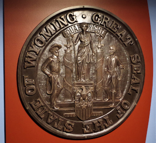

|  |
WY State Museum
With free admission, the WY State Museum is the perfect destination for all visitors. Housing exhibits on Wyoming history, geology, geography, and more, it is easy to spend a few hours exploring. The State Museum also houses the state archives, WY store, and traveling exhibits. There is the boot, "Licensed to Boot," outside the museum; it is covered in WY licenses plates and perfect for photos.
2301 Central Ave, Cheyenne, WY 82001 |
|
National Center for Atmospheric Research (NCAR)
Located west of Cheyenne, NCAR is worth the short journey outside of town. Free and open to the public, one can experience all of the weather monitored and researched at WY NCAR. Hands-on exhibits and movies inform and engage visitors. On Fridays, there is a free tour of the new super computer, Yellowstone, monitoring, gathering, and storing the atmospheric data. NCAR is also home to the boot "Atmospheric Research."
8120 Veta Dr, Cheyenne, WY 82009 |
|
Cheyenne Botanic Gardens
Free and open to the public, there is a lot to do at Botanic Gardens. First, it boasts a new conservatory and 20 specialty gardens. There’s a historic Locomotive 1242 on the grounds. Finally, even the children will be entertained as they explore the Paul Smith Children’s Village where they can dig in the sand, play music, and explore their own gardens.
710 S Lions Park Dr, Cheyenne, WY 82001 |
|
Wyoming Capitol Building
With renovations completed just this year, free self-guided tours are available weekdays. Take in the marble floors, fine woodwork, stained glass, and historic photos. See how the renovations returned it to its historical dimensions. It is listed on the National Register of Historic Places.
200 W 24th St, Cheyenne, WY 82001 |
|
Big Boy Steam Engine
If you can't visit the Depot, stopping by the Big Boy Steam Engine is a perfect photo opportunity. Old Number 4004 is a powerful coal-fired engine designed to pull over the steep grades between Cheyenne and Ogden, UT. The 4004 is one of the eight remaining Big Boys throughout the country.
Located in Holliday Park |